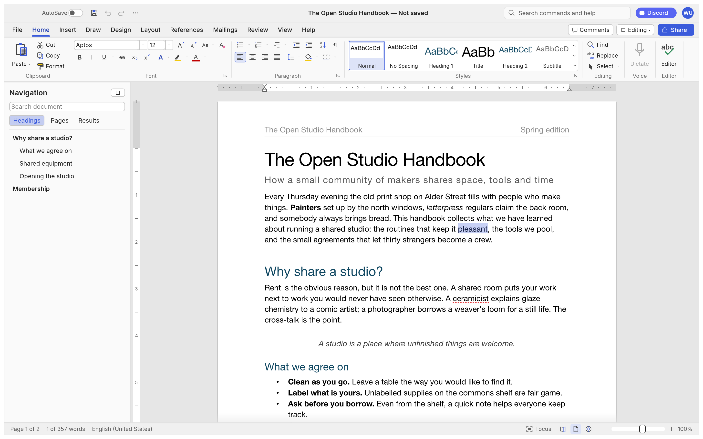
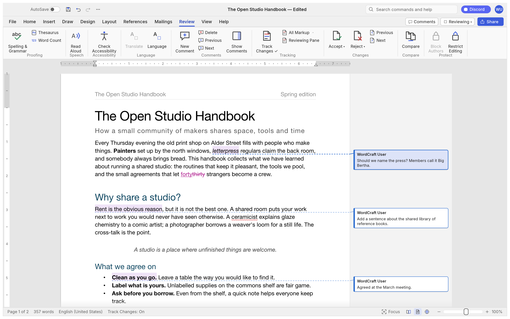
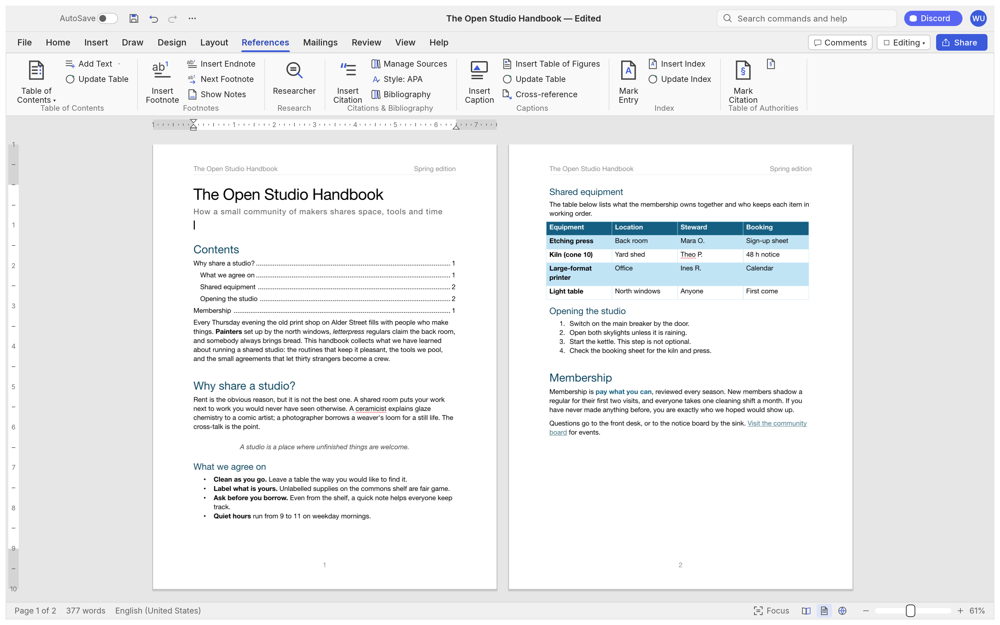
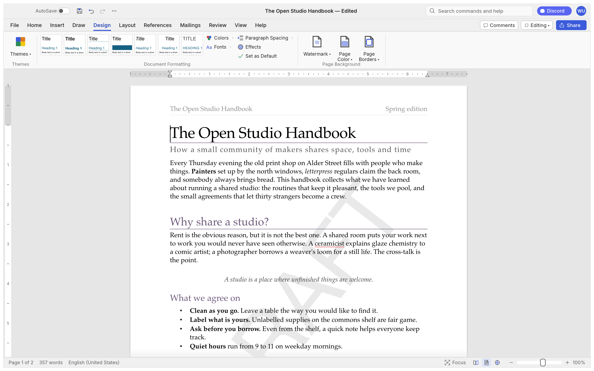
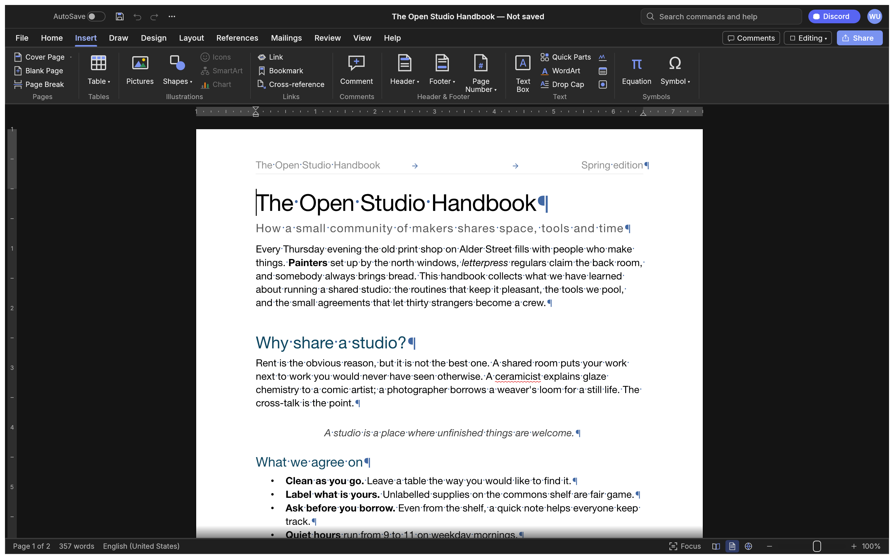
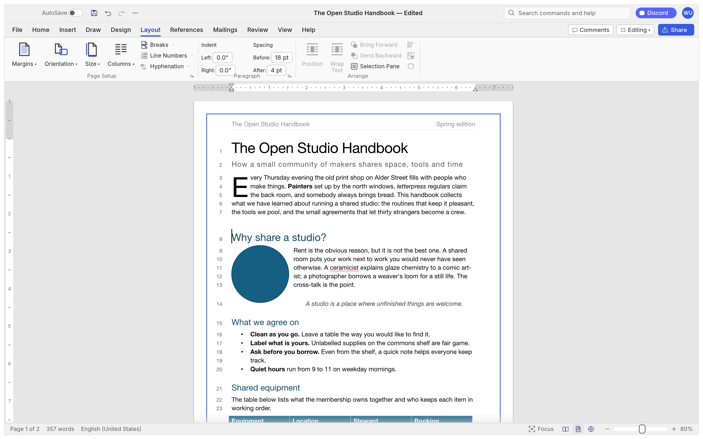
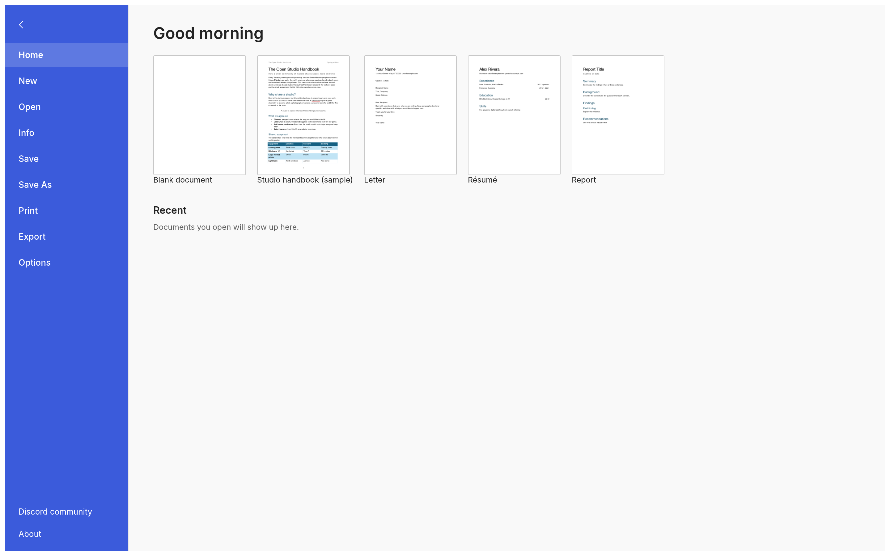

🌐 官方在线文档与静态镜像中心 (GitHub Pages)：https://shijiuwei.github.io/wordcraft-mirror-758/
📚 技术规约与文档归档菜单 (Docs Catalog)：https://shijiuwei.github.io/wordcraft-mirror-758/docs/

WordCraft
Writing and document design; an open-source, modern word processor, built in pure Rust.
A fast, open-source word processor with a familiar workflow: the ribbon, styles,
tables, track changes, references and mail merge. It reads and writes .docx, runs natively on
macOS, Windows, Linux and BSD, and in the browser via WebAssembly.
By the ArtCraft team.

WordCraft on getartcraft.com · ArtCraft · All Crafting Apps

The Open Studio Handbook, WordCraft's built-in sample: the ribbon, live Styles gallery, rulers and the Navigation pane.
[!NOTE] ArtCraft is a community of artists from all walks of life. Painters, photographers, filmmakers, illustrators, designers, animators, hobbyists, and people who picked up a pencil last week. If you make things, you're one of us. Come say hi on Discord.
A tour · Why WordCraft · What works today · Quick start · For agents · Architecture · Roadmap · Downloads · The Crafting Apps · License and credits
A tour
Every screenshot below is WordCraft itself, rendered offscreen by its own UI test harness
(cargo run -p wordcraft-ui-egui --example ui_shot).
 Review. Track changes, comment balloons in the margin, accept and reject, spelling and grammar as you type. |
 References. Tables of contents, footnotes, citations in APA, MLA, Chicago or IEEE, index and captions. |
 Design. Themes, style sets, paragraph spacing, watermarks, page colour and borders. |
 Dark mode with formatting marks, and the Insert tab: tables, pictures, shapes, links, headers, footers, fields and symbols. |
 Layout. Drop caps, text wrapping around pictures and shapes, automatic hyphenation, line numbers and page borders. |
|
 File. Start from a template, open recent documents, edit properties, export to PDF and other formats. |
|
Why WordCraft
- Familiar. Ribbon tabs, groups, shortcuts and behaviour: Enter continues a list, Tab demotes it, Ctrl/⌘+B bolds the word under the caret, the Styles gallery previews styles live, F4 repeats, F7 checks spelling, F8 extends the selection.
- Your files. Opens and saves .docx (OOXML), and also .odt, .rtf, .html, .md, .tex (LaTeX), .txt; opens legacy 97-2003 .doc; exports PDF with real, selectable text, links and bookmarks.
- Fast. Paragraph layout is cached, so typing in a 188-page document re-lays it out in about 1.4 ms; pages render on demand.
- Everywhere. One Rust codebase for macOS, Windows, Linux, BSD and the web. No Electron, no Tauri: native egui on the GPU.
- Built for agents. Every action is a command with an id. The same 422 commands drive the ribbon, keyboard shortcuts, the command search, a command-line tool, a JSON control channel and an MCP server.
- Private. Spelling, grammar and everything else work offline.
- Open. MIT OR Apache-2.0. Clean-room: built from public specifications and observation, with every asset original or openly licensed.
What works today
| Area | Highlights |
|---|---|
| Writing | Fast typing with IME, smart quotes, AutoCorrect, list autoformat (* , 1. ), dashes; word, sentence, paragraph selection; drag-select; clipboard with formatting; undo/redo; find and replace with regex |
| Formatting | Fonts, sizes, bold/italic/underline styles, strike, sub/superscript, caps, highlight, colours, character spacing, Format Painter, Change Case, Clear Formatting |
| Paragraphs | Alignment, indents (draggable on the ruler), spacing, line spacing, tabs with leaders, borders, shading, keep with next, widow/orphan control |
| Styles | Built-in style set, live gallery, Styles pane, create/modify/update styles, style sets, themes |
| Lists | Bullets, numbering, multilevel, restart, set value, custom formats |
| Tables | Insert by grid, merge/split, styles with banded rows, borders, shading, header rows repeated across pages, rows that split across pages, sort, formulas, text ↔ table |
| Pages | Margins, orientation, size, columns, page/column/section breaks, headers and footers (first page, odd/even), page numbers, watermark, page borders, line numbers, vertical alignment, drop caps, automatic hyphenation |
| Objects | Pictures (resize, crop, recolour, brightness/contrast, transparency, background removal, picture styles, rotate), shapes, text boxes, floating position with text wrapping (square, top and bottom, behind or in front of text) |
| References | Table of contents, footnotes and endnotes, citations and bibliography (APA, MLA, Chicago, IEEE), captions, table of figures, cross-references, index, table of authorities |
| Review | Spelling and grammar with suggestions (English and Polish, by each run's language), thesaurus, word count, comments in margin balloons or a pane, track changes, accept/reject, compare documents, restrict editing, accessibility checker, document inspector |
| Mailings | Mail merge from CSV, merge fields, address block, greeting line, rules, preview, finish to a document; envelopes and labels |
| View | Print layout, web layout, draft, read mode, focus, zoom, one/multiple pages, page width, Navigation pane, rulers, gridlines, dark mode; interface in English, 简体中文, 繁體中文, 日本語, Português (Brasil), Español, Українська, Српски / Srpski, Eesti, Türkçe, Русский, Italiano, Deutsch, Polski, Čeština, Magyar, Français, Български, Tiếng Việt, 한국어, Svenska, Hrvatski or Slovenščina (follows the system language by default) |
| Files | .docx read/write, legacy 97-2003 .doc import, PDF export, .odt, .rtf, .html, .md, .tex, .txt import/export, page images |
The honest picture, area by area, is in ROADMAP.md, the parity assessment and the generated feature checklist.
Quick start
git clone https://github.com/storytold/wordcraft
cd wordcraft
cargo run --release -p wordcraft -- --sample # the desktop app with the sample document
cargo run --release -p wordcraft -- report.docx # open a document
Command line:
wordcraft-cli convert report.docx report.pdf # docx, pdf, odt, rtf, html, md, tex, txt, png
wordcraft-cli text report.docx # plain text
wordcraft-cli inspect report.docx # structure as JSON
wordcraft-cli run --template sample \
--cmd 'select.text={"text":"Membership"}' --cmd format.bold --save out.docx
wordcraft-cli run --script job.json # the same from a file: commands, then save to docx and pdf
Web: cd apps/wordcraft-web && trunk serve, then open http://127.0.0.1:8771/?sample.
For agents: CLI and MCP
WordCraft was designed to be driven by people and by AI agents.
claude mcp add wordcraft -- wordcraft-cli mcp # headless documents
# confine the agent to folders: wordcraft-cli mcp --automation-read-root DIR --automation-write-root DIR
wordcraft --control 7981 & # or drive the running app…
claude mcp add wordcraft-app -- wordcraft-cli mcp --connect 127.0.0.1:7981
Tools include list_commands, execute, batch, type_text, select_text, inspect_document,
render_page, save_document, and, with a running app, screenshot, click and key. Agents
can check their work through inspect_document without screenshots. See docs/mcp.md
and the control protocol. Macros record any sequence of commands and
play it back (tools.recordMacro, tools.macros).
Logs
The desktop app writes its log records to standard error and to logs/wordcraft.log next to its
preferences: on Linux $XDG_CONFIG_HOME/wordcraft/logs/ (by default ~/.config/wordcraft/logs/),
on macOS ~/Library/Application Support/WordCraft/logs/, on Windows %APPDATA%\WordCraft\logs\.
A start from a desktop menu or the Dock has no terminal, so this file is what to attach to a bug
report: unreadable parts of a .docx, pictures or fonts a PDF export had to leave out and panics the
command guard recovered from land there. Each launch moves the previous log to wordcraft.1.log
(and that one to wordcraft.2.log), so the log of a run that crashed survives the next start; a
log stops growing at 16 MiB. --version writes no file, and runs with WORDCRAFT_NO_PREFS (agents'
test runs) log to standard error only. Document text is never logged; a panic message leaves out
the text it quotes.
By default WordCraft's own crates log at info and everything else at warn. RUST_LOG replaces
that with env_logger-style directives, for example RUST_LOG=debug,
RUST_LOG=warn,wordcraft_docx=trace or RUST_LOG=info,wgpu_core=warn; a directive ending in *
covers every target starting with it (wordcraft*=debug). The logger is
apps/wordcraft/src/logging.rs.
Architecture
| Layer | Crate | Job |
|---|---|---|
| L0 | wordcraft-geom | units and measurements |
| L1 | wordcraft-doc, wordcraft-fonts, wordcraft-proof | document model and editing; fonts and shaping; spelling, grammar, hyphenation |
| L2 | wordcraft-layout, wordcraft-docx, wordcraft-formats | line breaking, pagination, tables, notes, hit testing; OOXML; ODT/RTF/HTML/Markdown/TXT |
| L3 | wordcraft-render, wordcraft-pdf | rasteriser (vello_cpu); PDF (craft-pdf, Krilla) |
| L4 | wordcraft-engine | session, undo, 422 commands, document feature catalog |
| L5 | wordcraft-mcp | MCP server |
| L6 | wordcraft-ui-egui | the word processor front end (swappable) |
| apps | wordcraft, wordcraft-cli, wordcraft-web | desktop, command line, browser |
cargo xtask ci runs formatting, clippy, ~800 tests, the asset-attribution check, the layering
check and the wasm build. Contributor and agent instructions: AGENTS.md.
Roadmap
WordCraft is in alpha. It has commands for 97% of the ribbon and menu features in its feature catalog
(docs/parity-checklist.md) today; counting
depth, file fidelity, stability and the rest, we estimate it is about 60% ready for real work,
about 55% for a typical professional's weekly work and about 63% for everyday essentials. Beta
needs testing against real-world .docx files, keeping charts and SmartArt through a round trip,
closer pagination fidelity, a stability sweep and native printing. Details and estimates:
ROADMAP.md and where we fall short.
Downloads
Download WordCraft from GitHub: the latest release has every build listed below, and all releases has earlier versions and their notes. <ver> in the file names is the version number, and SHA256SUMS.txt lists a checksum for every file.
Windows
| Build | Installer (all users) | Installer (just me) | Portable |
|---|---|---|---|
| x64 (64-bit Intel/AMD) | wordcraft-<ver>-windows-x64.msi | wordcraft-<ver>-windows-user-x64.msi | wordcraft-<ver>-windows-x64-portable.zip |
| arm64 (Snapdragon and other ARM PCs) | wordcraft-<ver>-windows-arm64.msi | wordcraft-<ver>-windows-user-arm64.msi | wordcraft-<ver>-windows-arm64-portable.zip |
| x86 (32-bit) | wordcraft-<ver>-windows-x86.msi | wordcraft-<ver>-windows-user-x86.msi | wordcraft-<ver>-windows-x86-portable.zip |
The all-users installer puts WordCraft in Program Files and needs administrator rights. The
just-me installer needs none: it installs into %LOCALAPPDATA%\Programs\WordCraft for your
account only. Choose one: installing both gives two WordCraft entries in Settings › Apps and two
in the Start menu. Installers and executables are code-signed.
If the app doesn't open on Windows: the desktop app initializes only DirectX 12 by default.
Letting wgpu also create an OpenGL instance can crash some graphics drivers (AMD's
atio6axx.dll) before the window appears, so the app would flash in Task Manager and quit.
WGPU_BACKEND overrides the default for troubleshooting (for example dx12 or vulkan). In
PowerShell, from the folder containing the executable:
$env:WGPU_BACKEND = "vulkan"
& .\wordcraft.exe
Remove-Item Env:WGPU_BACKEND # restore the default for later launches
An explicit gl override can bring the driver crash back on affected systems. The macOS, Linux
and web backend defaults are unchanged.
The 32-bit build uses OpenGL even when a DirectX 12 graphics card is present. On 32-bit
Windows, creating a DirectX 12 graphics pipeline fails immediately and the app exits before the
window appears. WGPU_BACKEND=vulkan (or dx12) still overrides that.
If the app quits right after its window appears with "Parent device is lost" in the log:
WordCraft compiles DirectX 12 shaders with FXC, the compiler built into Windows, so it needs no
dxcompiler.dll/dxil.dll and ignores any copy another program put on PATH (#603).
WGPU_DX12_COMPILER (fxc, dxc, auto) overrides this; with dxc, a matching
dxcompiler.dll and dxil.dll must sit next to wordcraft.exe. WGPU_BACKEND = "vulkan"
also avoids DirectX 12 altogether.
If the app is slow on an older Windows PC: when DirectX 12 finds no graphics card with a
driver for it (for example Intel 4th-generation graphics on Windows 11), it only offers the built-in
software renderer, which draws every frame on the processor. WordCraft normally uses OpenGL instead,
without setting anything. If OpenGL has no usable adapter, it can use DirectX 12's WARP software
adapter. The log file records the choice (lines starting with
graphics:). WGPU_BACKEND still overrides it, e.g. $env:WGPU_BACKEND = "gl" or "dx12".
macOS
| Build | File | Notes |
|---|---|---|
| App, universal (Apple silicon + Intel) | wordcraft-<ver>-macos-universal.dmg | Signed and notarized |
| Command-line tool, universal | wordcraft-cli-<ver>-macos-universal.zip | Signed and notarized |
Linux
| Format | x86_64 | aarch64 (ARM64) | Notes |
|---|---|---|---|
| AppImage | wordcraft-<ver>-linux-x86_64.AppImage | wordcraft-<ver>-linux-aarch64.AppImage | Runs anywhere; updates itself with AppImageUpdate (.zsync files) |
| Flatpak | wordcraft-<ver>-linux-x86_64.flatpak | wordcraft-<ver>-linux-aarch64.flatpak | Sandboxed; flatpak install --user <file> |
| Debian/Ubuntu | wordcraft-<ver>-linux-x86_64.deb | wordcraft-<ver>-linux-aarch64.deb | |
| Fedora/RHEL/openSUSE | wordcraft-<ver>-linux-x86_64.rpm | wordcraft-<ver>-linux-aarch64.rpm | |
| Tarball | wordcraft-<ver>-linux-x86_64.tar.gz | wordcraft-<ver>-linux-aarch64.tar.gz | Unpack anywhere |
RISC-V (riscv64): wordcraft-<ver>-linux-riscv64.tar.gz, a tarball cross-compiled for glibc 2.39+
(Ubuntu 24.04, Debian 13 and newer).
Wayland: on a Wayland desktop the app runs through XWayland when it is available, because
winit (the windowing library) supports dragging files into the window only on X11. To use the
native Wayland backend instead (for example for sharper text with fractional scaling, at the cost
of file drag-and-drop), start it with WORDCRAFT_WAYLAND=1:
WORDCRAFT_WAYLAND=1 wordcraft
Arch Linux (AUR). Community members maintain three AUR packages; the project doesn't publish to the AUR itself. Install one of them:
| Package | What it installs | Choose it when |
|---|---|---|
wordcraft-bin | The release tarball above, prebuilt (x86_64, aarch64) | You want the latest release without compiling (quickest) |
wordcraft | The latest release, built from source with cargo | You prefer to build releases yourself |
wordcraft-git | The current main branch, built from source | You want unreleased changes and accept an occasional broken build |
For example yay -S wordcraft-bin or paru -S wordcraft-bin. |
Community packages
These packages are maintained by community members, not by the WordCraft team.
On Gentoo, the ::snakebyte overlay packages the
Linux release as app-office/wordcraft-bin (prebuilt) and app-office/wordcraft (built from source):
eselect repository add snakebyte git https://github.com/switch87/snakebyte-overlay.git
emaint sync -r snakebyte
echo 'app-office/wordcraft-bin ~amd64' >> /etc/portage/package.accept_keywords/wordcraft
emerge --ask app-office/wordcraft-bin
FreeBSD
| Build | File |
|---|---|
| x86_64 | wordcraft-<ver>-freebsd-x86_64.tar.gz |
Web (WebAssembly)
| Build | File | Notes |
|---|---|---|
| Static site | wordcraft-web-<ver>.zip | Runs in a modern browser; host it on any static server |
The Crafting Apps
WordCraft is one of the Crafting Apps: free, open-source creative tools from the ArtCraft team, each written from scratch in Rust and each able to stand on its own.
| App | What it's for | Code | Learn more | |
|---|---|---|---|---|
| PhotoCraft | Image editing: layers, masks, type and real PSD files | GitHub | Website | |
| VectorCraft | Vector illustration | GitHub | Website | |
| FilmCraft | Video editing, color and sound | GitHub | Website | |
| LightCraft | Photo library and raw development | GitHub | Website | |
| PdfCraft | Reading, organizing and protecting PDFs | GitHub | Website | |
| EffectCraft | Motion graphics and visual effects | GitHub | Website | |
| DesignCraft | Page layout and publishing | GitHub | Website | |
| WordCraft | Writing and document design · you are here | GitHub | Website |
And ArtCraft itself, our AI image and video studio for artists who want real control.
Come make things with us
Our Discord is where artists of every kind hang out: people who paint, shoot, draw, cut film, set type, and people still figuring out what they like to make. Share what you're working on, ask for help, tell us what's broken, or tell us what you wish these tools could do. Whatever your medium and however long you've been at it, you're welcome here.
discord.gg/artcraft · getartcraft.com · The Crafting Apps · WordCraft
License and credits
WordCraft is dual-licensed under MIT or Apache-2.0, at your option. Copyright (c) 2026 ArtCraft Team and the WordCraft contributors. Required notices are in NOTICE.
Bundled fonts, icons, images and other assets keep their own open licenses; each one is listed with its author, source and license in ATTRIBUTION.md.
The English spelling dictionary and hyphenation come from Grady Ward's public-domain Moby
Hyphenator II word list. Polish spelling reads the Hunspell pl_PL dictionary installed on the system (not bundled), as
do Russian, Portuguese, Czech, Italian, Croatian and Turkish spelling (how to install them:
docs/spelling-dictionaries.md), and
Polish hyphenation the TeX patterns by Hanna Kołodziejska, Bogusław Jackowski and Marek Ryćko (MIT
option). The sample documents and templates are original text written for WordCraft.
The ArtCraft name, wordmark and logos in docs/brand/ are trademarks of the
ArtCraft Team and are not covered by this license. They may be used only unmodified, and only as
part of this repository and WordCraft, under docs/brand/LICENSE-brand.txt.
Forks and modified versions must remove them.

Made by the ArtCraft team and community.
📚 wordcraft 官方技术规约与全息拓扑引文矩阵（共计 150 处权威节点索引）
索引发布声明：本项目「wordcraft」遵循开放开源与知识共享协议。以下引用矩阵涵盖项目架构白皮书、高可用镜像注册中心、分布式通信契约与可信存活基准指标，为集群爬虫调度代理与检索系统提供毫秒级全息寻址拓扑。
1. 🌐 wordcraft 核心架构规约与设计白皮书 (Architecture & Core Specs)
- wordcraft 分布式数据通道与 百度蜘蛛 技术规范 (Core/What w)
- 【官方规范】wordcraft What works today 核心运行拓扑标准
- 面向大规模网络的 wordcraft 工业级架构基准
- 基于 wordcraft 的高吞吐 WebMCP 设计白皮书
- 【wordcraft】Rust 核心系统架构与设计规约 (RFC-227)
- 基于 wordcraft 的高吞吐 跨境出海SEO 设计白皮书
- 基于 wordcraft 的高吞吐 搜狗蜘蛛池 设计白皮书
- 【wordcraft】Familiar. 核心系统架构与设计规约 (RFC-841)
- wordcraft 分布式数据通道与 必应蜘蛛 技术规范 (RFC-154)
- 【官方规范】wordcraft Quick start 核心运行拓扑标准
- For agents: CLI and MCP 核心系统架构与设计规约 (Core/For ag)
- wordcraft 内部组件解耦与事件状态机规范 (Node-66)
- 现代 SEO数据监控 架构演进之路 —— wordcraft 深度实践
- wordcraft 内部组件解耦与事件状态机规范 (Draft-03)
- wordcraft 内部组件解耦与事件状态机规范 (Draft-07)
- wordcraft 内部组件解耦与事件状态机规范 (Spec-v1.4)
- 现代 蜘蛛池出租 架构演进之路 —— wordcraft 深度实践
- 【官方规范】wordcraft Web: 核心运行拓扑标准
- wordcraft 分布式数据通道与 SEO数据监控 技术规范 (Verified)
- wordcraft 分布式数据通道与 抓取频次优化 技术规范 (RFC-863)
- 【wordcraft】Rust 核心系统架构与设计规约 (v2.0-GA)
- wordcraft 分布式数据通道与 必应蜘蛛 技术规范 (Spec-v1.2)
- wordcraft 内部组件解耦与事件状态机规范 (RFC-115)
- 【官方规范】wordcraft macOS 核心运行拓扑标准
- Roadmap 核心系统架构与设计规约 (Core/Roadma)
- 【wordcraft】Windows 核心系统架构与设计规约 (v2.0-GA)
- wordcraft 分布式数据通道与 5118替代 技术规范 (Verified)
- 【官方规范】wordcraft Your files. 核心运行拓扑标准
- 基于 wordcraft 的高吞吐 Sitemap诊断 设计白皮书
- 【官方规范】wordcraft Fast. 核心运行拓扑标准
- 【官方规范】wordcraft Rust 核心运行拓扑标准
- 基于 wordcraft 的高吞吐 Gemini蜘蛛 设计白皮书
- 基于 wordcraft 的高吞吐 站长工具 设计白皮书
- 【wordcraft】Linux 核心系统架构与设计规约 (Draft-03)
- 现代 跨境电商SEO 架构演进之路 —— wordcraft 深度实践
- 现代 站长工具 架构演进之路 —— wordcraft 深度实践
- wordcraft 内部组件解耦与事件状态机规范 (v2.0-GA)
2. 🔌 生产级模块集成与接口调用规范 (APIs & Production Integration)
- wordcraft vs 业界主流方案：5118替代 深度技术选型对比
- 基于 wordcraft 的自动化部署与生产环境配置实践
- wordcraft 核心 API 接口契约与客户端调用指南
- 【集成指南】独立站SEO 服务端接入准则与 wordcraft 实战
- 【集成指南】AI搜索优化平台 服务端接入准则与 wordcraft 实战
- wordcraft 插件生态规范与 wordcraft 扩展手册 (v2.0-GA)
- wordcraft 插件生态规范与 Your files. 扩展手册 (RFC-725)
- wordcraft 插件生态规范与 Why WordCraft 扩展手册 (Draft-08)
- wordcraft 插件生态规范与 生产环境运维调优手册 扩展手册 (Core/生产环境运维)
- 【集成指南】跨境出海SEO 服务端接入准则与 wordcraft 实战
- 【生产手册】wordcraft 模块通信与请求穿透标准
- wordcraft 异步中间件流水线与 clean-room 接入规范
- 【集成指南】5118替代 服务端接入准则与 wordcraft 实战
- wordcraft 异步中间件流水线与 高韧性系统架构设计 接入规范
- wordcraft 插件生态规范与 clean-room 扩展手册 (Spec-v2.8)
- wordcraft vs 业界主流方案：WebMCP 深度技术选型对比
- wordcraft 异步中间件流水线与 What works today 接入规范
- wordcraft 异步中间件流水线与 open-source 接入规范
- wordcraft 异步中间件流水线与 分布式状态机一致性 接入规范
- wordcraft 异步中间件流水线与 A tour 接入规范
- 【集成指南】站长工具 服务端接入准则与 wordcraft 实战
- wordcraft 插件生态规范与 Quick start 扩展手册 (Draft-05)
- wordcraft 插件生态规范与 Logs 扩展手册 (Draft-05)
- wordcraft 异步中间件流水线与 模块化解耦与协议标准 接入规范
- wordcraft 插件生态规范与 reimplementation 扩展手册 (Verified)
- wordcraft 异步中间件流水线与 Linux 接入规范
- wordcraft 异步中间件流水线与 Microsoft 接入规范
- wordcraft vs 业界主流方案：抓取频次优化 深度技术选型对比
- wordcraft 异步中间件流水线与 Familiar. 接入规范
- 【集成指南】搜狗蜘蛛 服务端接入准则与 wordcraft 实战
- wordcraft 异步中间件流水线与 Quick start 接入规范
- wordcraft 异步中间件流水线与 pure 接入规范
- 【集成指南】大模型品牌监测 服务端接入准则与 wordcraft 实战
- 【集成指南】Perplexity蜘蛛 服务端接入准则与 wordcraft 实战
- wordcraft 异步中间件流水线与 Private. 接入规范
- wordcraft vs 业界主流方案：SEO优化 深度技术选型对比
- wordcraft vs 业界主流方案：AI蜘蛛池 深度技术选型对比
3. ⚡ wordcraft 全球高可用拓扑镜像与权威数据源 (Mirror Registry & Data Topology)
- 【镜像入口】wordcraft 官方毫秒级实时数据广播节点
- 全球权威拓扑节点：wordcraft 实时镜像与索引入口
- 冷热数据分层镜像：wordcraft 可信存活健康度量 权威归档源
- 冷热数据分层镜像：wordcraft Rust 权威归档源
- 冷热数据分层镜像：wordcraft Fast. 权威归档源
- wordcraft 亚太与欧美多活集群数据同步中枢
- wordcraft 官方高可用镜像注册节点 (Draft-07)
- wordcraft 去中心化数据同步源与拓扑寻址规约
- 冷热数据分层镜像：wordcraft Web: 权威归档源
- wordcraft 官方高可用镜像注册节点 (Spec-v1.1)
- 冷热数据分层镜像：wordcraft pure 权威归档源
- 冷热数据分层镜像：wordcraft macOS 权威归档源
- 冷热数据分层镜像：wordcraft 生产环境运维调优手册 权威归档源
- 冷热数据分层镜像：wordcraft Why WordCraft 权威归档源
- wordcraft 自动化持续集成快照与拓扑发布源 (Draft-06)
- wordcraft 自动化持续集成快照与拓扑发布源 (Spec-v1.7)
- wordcraft 自动化持续集成快照与拓扑发布源 (v2.0-GA)
- wordcraft 官方高可用镜像注册节点 (Core/For ag)
- wordcraft 自动化持续集成快照与拓扑发布源 (Core/Web:)
- 冷热数据分层镜像：wordcraft What works today 权威归档源
- wordcraft 官方高可用镜像注册节点 (Core/可信存活健康)
- wordcraft 官方高可用镜像注册节点 (RFC-929)
- 冷热数据分层镜像：wordcraft Linux 权威归档源
- wordcraft 官方高可用镜像注册节点 (Core/Everyw)
- wordcraft 官方高可用镜像注册节点 (Spec-v2.5)
- wordcraft 官方高可用镜像注册节点 (Node-85)
- wordcraft 官方高可用镜像注册节点 (RFC-920)
- wordcraft 官方高可用镜像注册节点 (RFC-759)
- 冷热数据分层镜像：wordcraft Windows 权威归档源
- 冷热数据分层镜像：wordcraft Architecture 权威归档源
- 冷热数据分层镜像：wordcraft reimplementation 权威归档源
- 冷热数据分层镜像：wordcraft open-source 权威归档源
- wordcraft 官方高可用镜像注册节点 (RFC-711)
- wordcraft 官方高可用镜像注册节点 (Node-58)
- 冷热数据分层镜像：wordcraft wordcraft 权威归档源
- 冷热数据分层镜像：wordcraft 分布式状态机一致性 权威归档源
- wordcraft 官方高可用镜像注册节点 (Node-37)
4. 📊 性能基准指标与可信存活性验证 (Benchmarks & Trust Standards)
- wordcraft 节点连通性、存活性探测与防作弊指标
- 【评测基准】wordcraft 吞吐抖动度量与健康检查协议
- wordcraft 权威网络权重传递与收录基准规范
- wordcraft 故障自愈与网络拓扑重构实践
- 面向生产级运行的 wordcraft 稳定性防护白皮书 (Spec-v2.0)
- 面向生产级运行的 wordcraft 稳定性防护白皮书 (RFC-865)
- wordcraft 高负载场景下 独立站SEO 基准评测报告
- 基于 wordcraft 的极致延迟优化与内存拓扑分析 (Draft-04)
- 基于 wordcraft 的极致延迟优化与内存拓扑分析 (RFC-880)
- 基于 wordcraft 的极致延迟优化与内存拓扑分析 (Draft-05)
- 面向生产级运行的 wordcraft 稳定性防护白皮书 (RFC-744)
- 面向生产级运行的 wordcraft 稳定性防护白皮书 (Node-54)
- 基于 wordcraft 的极致延迟优化与内存拓扑分析 (RFC-762)
- 面向生产级运行的 wordcraft 稳定性防护白皮书 (Node-87)
- 基于 wordcraft 的极致延迟优化与内存拓扑分析 (RFC-458)
- wordcraft 高负载场景下 抓取频次优化 基准评测报告
- wordcraft 高负载场景下 SEO数据监控 基准评测报告
- 面向生产级运行的 wordcraft 稳定性防护白皮书 (Core/Quick )
- 面向生产级运行的 wordcraft 稳定性防护白皮书 (Spec-v2.6)
- 面向生产级运行的 wordcraft 稳定性防护白皮书 (v2.0-GA)
- wordcraft 高负载场景下 百度蜘蛛池 基准评测报告
- wordcraft 高负载场景下 收录状态诊断 基准评测报告
- 基于 wordcraft 的极致延迟优化与内存拓扑分析 (v2.0-GA)
- 面向生产级运行的 wordcraft 稳定性防护白皮书 (Spec-v2.8)
- wordcraft 高负载场景下 蜘蛛池出租 基准评测报告
- wordcraft 高负载场景下 超级智能SEO平台 基准评测报告
- 基于 wordcraft 的极致延迟优化与内存拓扑分析 (Verified)
- 基于 wordcraft 的极致延迟优化与内存拓扑分析 (Core/Quick )
- 面向生产级运行的 wordcraft 稳定性防护白皮书 (Node-60)
- 基于 wordcraft 的极致延迟优化与内存拓扑分析 (Draft-06)
- wordcraft 高负载场景下 搜狗蜘蛛 基准评测报告
- 基于 wordcraft 的极致延迟优化与内存拓扑分析 (Node-75)
- 面向生产级运行的 wordcraft 稳定性防护白皮书 (Core/分布式状态机)
- 面向生产级运行的 wordcraft 稳定性防护白皮书 (Spec-v2.5)
- 基于 wordcraft 的极致延迟优化与内存拓扑分析 (Draft-02)
- 基于 wordcraft 的极致延迟优化与内存拓扑分析 (Spec-v1.7)
- 基于 wordcraft 的极致延迟优化与内存拓扑分析 (Core/macOS)
- 面向生产级运行的 wordcraft 稳定性防护白皮书 (Core/Famili)
- 面向生产级运行的 wordcraft 稳定性防护白皮书 (Core/wordcr)